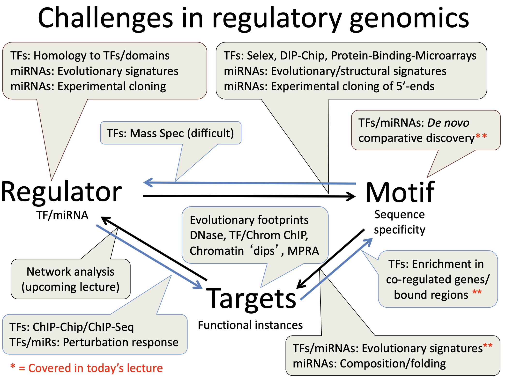

home..
Lecture 10_ regulatory motifs
zying / February 2023 (385 Words, 3 Minutes)
Lectures
ML in genomics
Lecture 10: Regulator Motifs Discovery
Features
- turned on/off response to changing environment
- no direct addressing: genes contain sequences of motifs (tags)
- specialized protein (TF) recognize these tags
- motif has many different class (enhancer, promoter, splicing…)
- not limited to DNA sequences (spicing signals, Domains and epitopes at protein level, recurring patterns at physiological level…)
Regulator structure to recognize motifs
- proteins chemical properties can recognized DNA fregments (don’t need open DNA)
- 3D topology dictates specificity (fully constrained pos or ambiguous/degenerate pos)
- other types of recognition (micro RNA, Nucleosomes, RNAs structure)
Infomatics perspect of motif
- summary information
- integrate many pos
- measure of information
(generative model)
Challenges of motifs discovery
- short (6-8 bp), sometimes degenerate
- can contain any set of nucleotides
- Act at variable distance (upstream of downstream)

General thoughts of motifs discovery
- Two assumptions about the data
- assume no pairwise correlations between bases (each base is independent) [the risk of overfitting data]
- all motifs have fixed lengths
- methods for motif discovery
- region-based (EM, Gibbs sampling, greedy algorithm…)
- local alignment
- find non-random seqences
- reduce the search space by applying prior knowledge
- conserved blocks
- examine the requency of kmers
- probabilistic methods
- genome-wide (conservation-based)
- In vitro/trans (protein domains): based experiments
- region-based (EM, Gibbs sampling, greedy algorithm…)
Expectation maximization
Key idea in EM
- Starting positions<->motif matrix
Basic Iterative Approach: Given: length parameter W, traning set of sequences set initial value for motif do -> re-estimate starting-position from motif -> re-estimate motif from starting-position until convergence return: motif,starting positions - EM is a deterministic algorithm: dependent on the initial starting points, maybe converged in local max but not global
- rerun the algorithm with different initial starting positions to try reduce the chance of converging on local max (MEME-Multiple EM for motif Elicitation)
The E step: estimating $Z_ij$ from the PWM (profile matrix)
- Initialization (generate an initial probability weight matrix)
- can initialize the PWM by choosing starting locations randomly
- if there is 0 probability, it is generally good idea to insert pseudo- counts into your probabilities
- keep a background distribution
- Expectation (generate a vector $Z_ij$)
- calculate $Z_ij$using Bayes’ Rule (can’t comprehense clearly)
M step: Finding the maximum likelihood motif from starting positions $Z_ij$
- Maximization
- Repeat
- to measure how much each element in the PWM changes after step max is a possible way to test whether the profile matrix has converged
Gibbs Sampling: Sample from joint $(M,Z_ij)$
- to measure how much each element in the PWM changes after step max is a possible way to test whether the profile matrix has converged
- Sampling motif position based on the Z vector
- Initialization
- Remove
- Update
- Sample
- Iterate
- More likely to find global maximum, easy to implement
De novo motif discovery
Motivation for de novo motif discovery
- TF and centric approaches are not comprehensive and are biased
- generally require TF (antibody to factor)
- De novo using conservation is unbiased, but can't match motif to factor and require multiple genomes
Using genome-wide conservation
Validation of discovered motifs with functional datasets
Evolutionary signatures for regulatory motifs
De novo Dissection and confirmation of regulaory regions
#